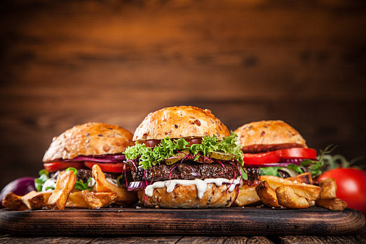

Burger
Home

Description
This is a general recipe for a homemade burger. This is not strictly a cheeseburger or a hamburger. It can be anything you want it to be.
Ingredients
Main Ingredients
- Beef patty
- Burger bun
- Burger sauce or mayonnaise
Only the main ingredients will make a pretty boring burger. I'd add some optional ingredients to make it more interesting.
Optional Ingredients
- Slice(s) of cheddar cheese
- Bacon
- Lettuce
- Slice(s) of tomato
- Slice(s) of onion
The beautiful thing about burgers is that you can add whatever you want to them. If you really want to go crazy, you can even add fruit like apples or pineapples.
Steps
- Fry the beef patty in the pan.
- While the beef patty is frying, toast the burger bun or fry it next to the patty.
- If you're using cheese, add it on top of the beef patty while it's still frying but after flipping the patty once.
-
Build your burger.
- Add sauce to the bottom bun.
- Add lettuce.
- Add tomato.
- Add patty with melted cheese.
- Add onion and other optional ingredients.
- Add more sauce.
- Add the toasted top bun.
Enjoy your burger!